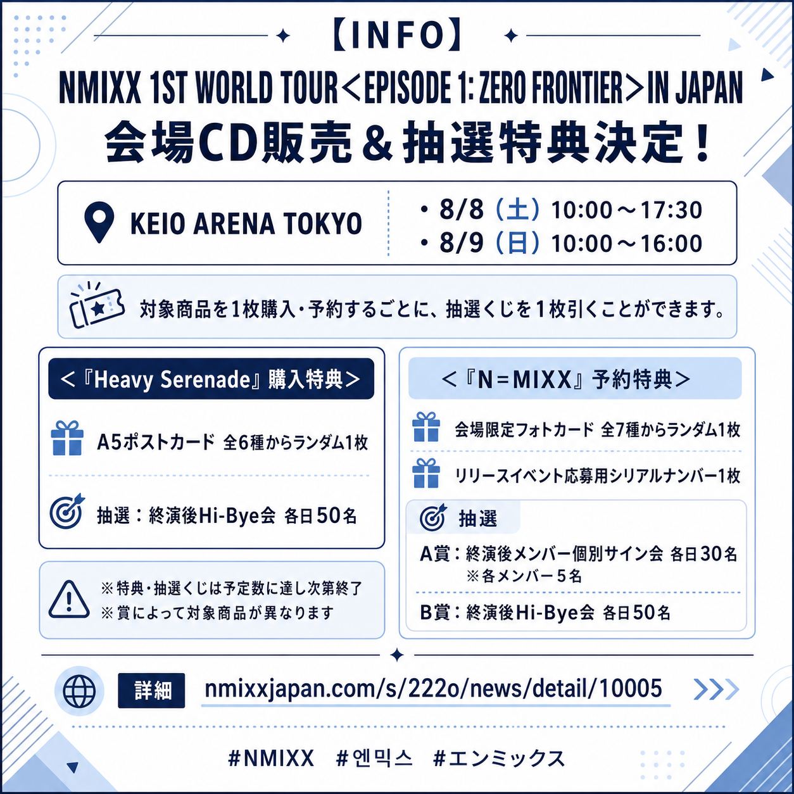
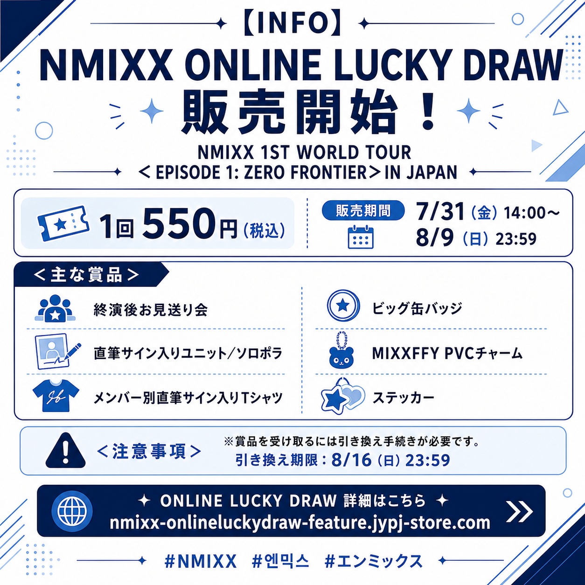

NMIXX日本活動に関する最新情報まとめ｜『N=MIXX』店舗別特典・会場CD販売・ONLINE LUCKY DRAW
NMIXXの日本活動に関する新しい情報が公開されました。
2026年12月9日（水）に発売される「NMIXX JAPAN DEBUT BEST ALBUM『N=MIXX』」の店舗別購入特典に加え、NMIXX 1ST WORLD TOUR＜EPISODE 1: ZERO FRONTIER＞IN JAPANの会場CD販売、購入者限定抽選特典、ONLINE LUCKY DRAWの実施が決定しています。
この記事では、それぞれの内容を分かりやすくまとめて紹介します。
NMIXX JAPAN DEBUT BEST ALBUM『N=MIXX』店舗別購入特典
2026年12月9日（水）に発売される、NMIXXの日本デビューベストアルバム『N=MIXX』の店舗別購入特典が公開されました。
購入する店舗によって特典内容が異なるため、希望する特典を確認したうえで予約・購入してください。
発売日
2026年12月9日（水）
店舗別購入特典
- TOWER RECORDS：フォトカード
- HMV：スマホサイズステッカー
- 楽天ブックス：アクリルキーホルダー
- Amazon：メガジャケ
- セブンネットショッピング：アクリルクリップバッジ
- ネオウィング：インスタントフォト風ブロマイド
- アニメイト：4カットフォト
- JYP JAPAN ONLINE STORE：回転アクリルスタンド
- WARNER MUSIC STORE：アクリルコースター
Amazon以外の店舗別特典は、全6種の中からランダムで1種が付属します。
Amazonのメガジャケは、購入した商品のジャケット絵柄に対応した特典となります。
特典は予定数に達し次第終了する場合があるため、確実に入手したい方は早めの予約がおすすめです。
対象商品
- 初回限定盤A：CD＋GOODS / 5,200円（税込）
- 初回限定盤B：CD＋Blu-ray / 4,180円（税込）
- 通常盤：CD / 2,530円（税込）
KEIO ARENA TOKYO公演 会場CD販売・抽選特典
NMIXX 1ST WORLD TOUR＜EPISODE 1: ZERO FRONTIER＞IN JAPANのKEIO ARENA TOKYO公演にて、会場CD販売が実施されます。
対象商品を1枚購入または予約するごとに、抽選くじを1枚引くことができます。
購入・予約する商品によって、受け取れる特典や参加できる抽選が異なります。

会場
KEIO ARENA TOKYO
CD販売時間
- 2026年8月8日（土） 10:00〜17:30
- 2026年8月9日（日） 10:00〜16:00
販売時間は状況により変更される場合があります。
また、各特典や抽選くじは予定数に達し次第終了となります。
『Heavy Serenade』購入特典
- A5ポストカード 全6種の中からランダム1枚
- 抽選：終演後Hi-Bye会 各日50名
『N=MIXX』予約特典
- 会場限定フォトカード 全7種からランダム1枚
- リリースイベント応募用シリアルナンバー 1枚
- A賞：終演後メンバー個別サイン会 各日30名（各メンバー5名）
- B賞：終演後Hi-Bye会 各日50名
抽選特典は賞によって対象商品が異なります。参加を予定している方は、購入・予約前に対象商品や注意事項を必ず確認してください。
NMIXX ONLINE LUCKY DRAW
NMIXX 1ST WORLD TOUR＜EPISODE 1: ZERO FRONTIER＞IN JAPANの開催を記念した「NMIXX ONLINE LUCKY DRAW」が実施されます。
オンラインで購入できるラッキードローで、終演後お見送り会への参加権や、メンバーの直筆サイン入りグッズなどが当たります。
会場に行く方だけでなく、オンラインから参加したい方も対象となる企画です。

販売期間
2026年7月31日（金）14:00〜2026年8月9日（日）23:59
販売価格
1回550円（税込）
販売期間内であっても、賞品の予定数に達した場合は販売が終了する可能性があります。
ONLINE LUCKY DRAWの主な賞品
- 終演後お見送り会
- 直筆サイン入りユニット／ソロポラ
- メンバー別直筆サイン入りTシャツ
- ビッグ缶バッジ
- MIXXFFY PVCチャーム
- ステッカー
賞品の引き換えについて
ONLINE LUCKY DRAWで当選した賞品を受け取るためには、購入後に賞品の引き換え手続きを行う必要があります。
当選しただけでは賞品の発送やイベント参加の手続きが完了しないため、必ず期限内に引き換えを行ってください。
引き換え期限：2026年8月16日（日）23:59まで
まとめ
今回公開された情報は、以下の3つです。
- NMIXX JAPAN DEBUT BEST ALBUM『N=MIXX』の店舗別購入特典
- KEIO ARENA TOKYO公演での会場CD販売・購入者限定抽選
- 終演後お見送り会や直筆サイン入り賞品が当たるONLINE LUCKY DRAW
店舗別特典、会場限定特典、抽選特典は、それぞれ対象商品や受付期間、参加条件が異なります。
特典や抽選くじは予定数に達し次第終了する可能性があるため、参加・購入を予定している方は、各公式ページの詳細と注意事項を確認したうえで早めに手続きを行ってください。